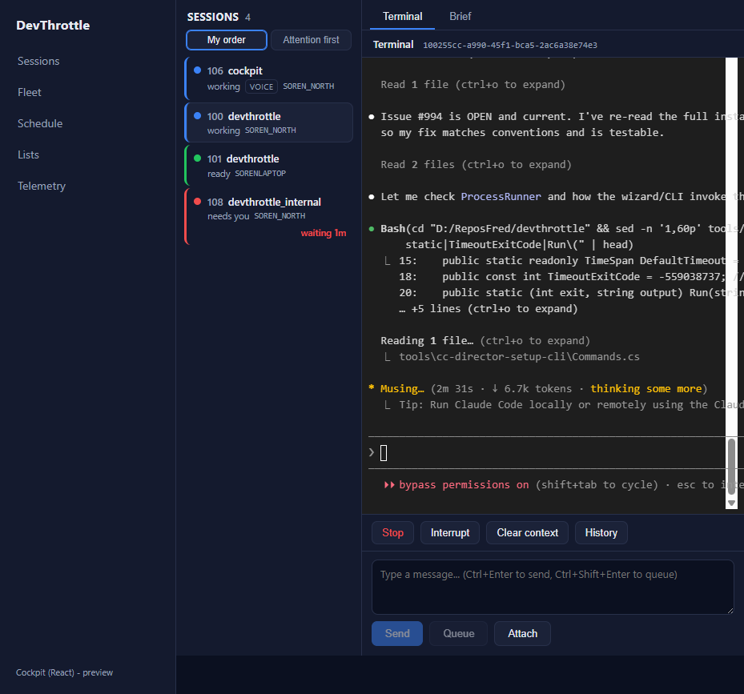
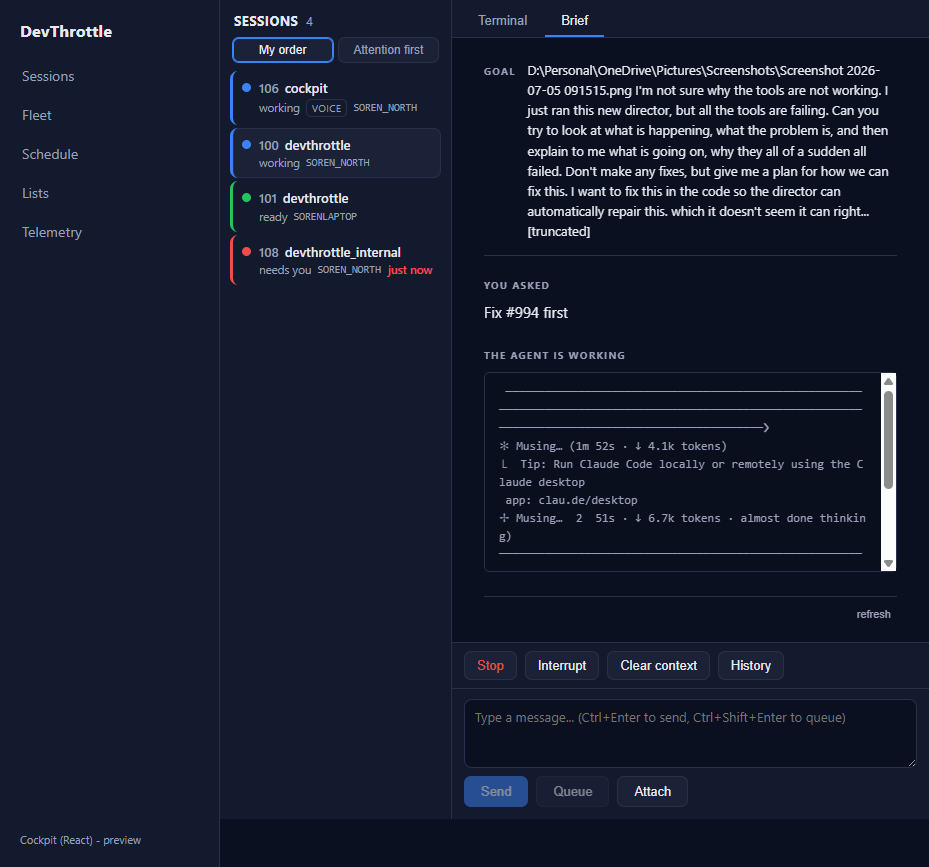
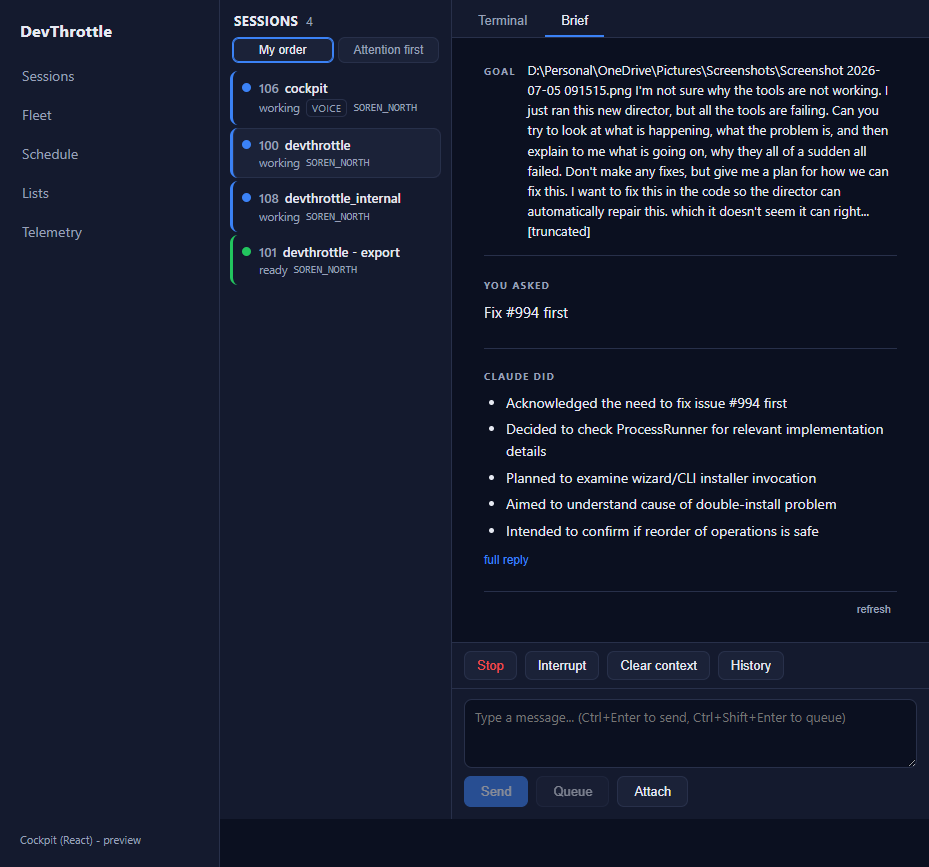
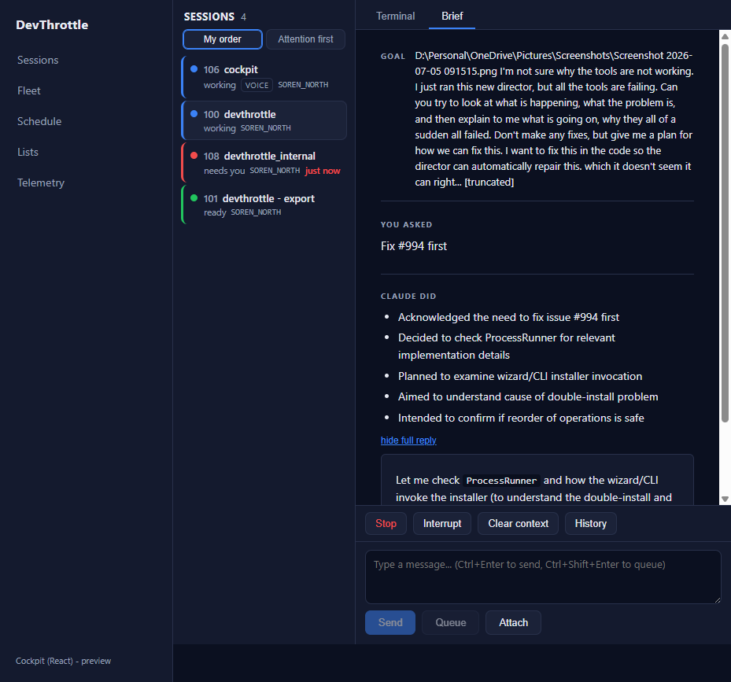
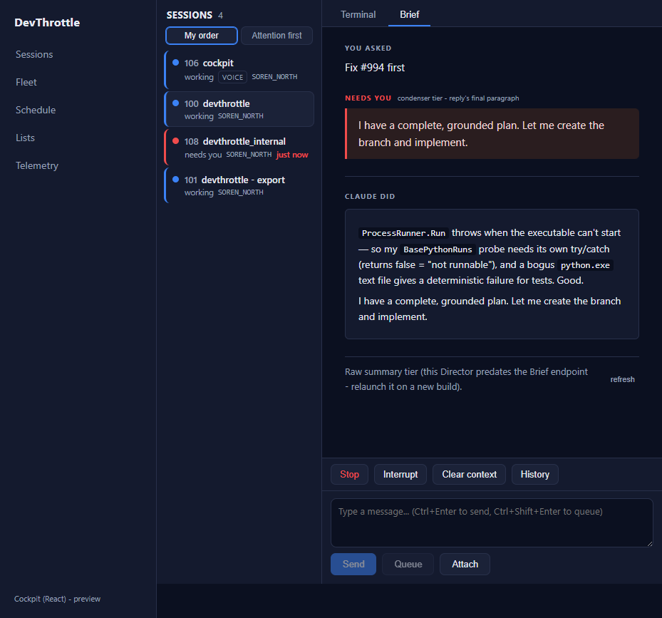
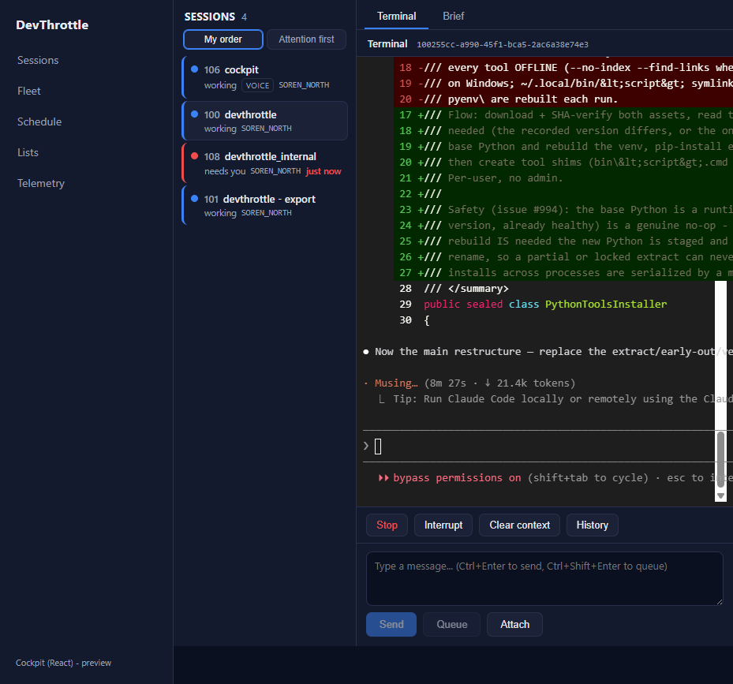

Issue #973 - Port the Brief (BriefPane) to the React Cockpit
Developer Agent proof. Part of epic #967 (rebuild the Cockpit in React). Verified live against a real Gateway and real fleet sessions on 2026-07-05.
What was implemented
The full-page session Brief - the async enrichment layered over the live terminal that shows
what the user asked, what the agent did, and what the
agent needs - is ported from the Blazor BriefPane.razor to the
apps/cockpit React desktop shell (its condenser and raw-summary degrade tiers).
packages/client-core/src/brief/briefClient.ts- typed same-origin Gateway reads:getBrief(GET /sessions/{sid}/brief),getSummary(the degrade target on older Directors), andgetScreenTail(the live current-screen peek). Narrow local shapes mirror the C# DTOs (these endpoints ride the generic per-session proxy and are not in the OpenAPI schema - the same pattern history and the queue reads use).parseScreenTailports the Cockpit grid-html strip and is unit tested.apps/cockpit/src/sessions/BriefPane.tsx- renders YOU ASKED / CLAUDE DID / NEEDS YOU plus the goal, the working and on-screen-prompt states with a live screen tail, and the full-reply expander. Reply markdown renders through client-coremarkdownToHtmlwith raw HTML disabled. The pane owns its own fetch and reloads as turns progress from the roster poll's activity/briefing state transitions - independent of the terminal stream.apps/cockpit/src/sessions/SessionDetail.tsx- a Terminal / Brief tab. The terminal stays mounted (hidden via CSS, never unmounted) behind the Brief, so the live terminal is never torn down or blocked while the Brief catches up.apps/cockpit/src/styles.css- the Blazor.brief*styles ported onto the desktop Cockpit design tokens (no hard-coded colors outside this file).
Scope: the condenser (/brief) and raw (/summary) tiers,
which are exactly the DirectorClient GetBrief/GetSummary degrade path this issue names as the data
contract. The wingman turn-brief tier (one-tap options, explain, feedback, mission-complete close)
depends on Gateway wingman endpoints that are not prerequisites of this issue and lands with the
awareness / turn-rail work (#974).
Acceptance criteria
| Criterion | Result | Evidence |
|---|---|---|
| The Brief renders the ASK / DID / NEEDS-YOU content for a real session and updates as turns progress. | PASS | Live session 100255cc: YOU ASKED "Fix #994 first", CLAUDE DID (5 real condensed
bullets), NEEDS YOU (final paragraph). The working-state capture shows a different, newer ask
with the live screen tail, and switching back to the terminal shows it had advanced -
the Brief tracks turns. Figures 2, 3, 5. |
| It never blocks or freezes the live terminal while it catches up. | PASS | The terminal stays mounted behind the Brief. After the Brief loaded and reloaded across several tab switches, the terminal (Figure 6) had advanced well past its first capture (Figure 1) - the WebSocket stream was never torn down or frozen. |
| The degrade path behaves the same as today on an older Director. | PASS | With /brief forced to 404, the pane degrades to /summary and shows
NEEDS YOU computed by the ported finalParagraph fallback ("condenser tier -
reply's final paragraph"), the safe-markdown reply, and the "Raw summary tier" foot note -
identical to the Blazor behavior. Figure 5. |
| No absolute URLs in the client (lint rule passes). | PASS | All reads are root-relative to the Gateway. npm run lint (the #968
Gateway-only-ingress rule) passes clean; npm run typecheck and the cockpit
production build pass; 63 client-core tests pass (5 new for parseScreenTail). |
Evidence
Figure 1 - Terminal tab: the live terminal

Figure 2 - Brief tab: GOAL, YOU ASKED, and the working state with a live tail

Figure 3 - Brief tab: YOU ASKED + CLAUDE DID (real condensed bullets)

/brief, plus the "full reply" expander.Figure 4 - Full reply expanded: safe markdown (raw HTML disabled)

code spans for
ProcessRunner) through client-core markdownToHtml; raw HTML is escaped,
never executed.Figure 5 - Degrade path: NEEDS YOU from the summary tier

/brief 404, the pane degrades: NEEDS YOU ("condenser tier - reply's
final paragraph") from the ported finalParagraph over the real
/summary, the safe-markdown reply, and the "Raw summary tier" foot note.Figure 6 - Terminal still live after all the Brief activity

CenCon impact
No architecture or security drift. The change reuses the established Gateway-only-ingress pattern
(root-relative reads) and the narrow-local-DTO pattern; it adds no new endpoint and puts no secret
in the browser (the fallback runs client-side, already approved in #970). No
docs/cencon/ files change.